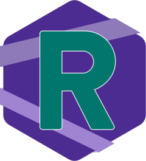
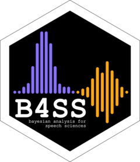

Courses
Check the Data Analysis @ UoE LEL website for learning resources on research methods in linguistics.
- Quantitative Methods for Linguistics and English Language (UG and PG). Course website
Data Analysis for Linguistics and English Language (undergraduate). Course website
Statistics and Quantitative Methods [LASC11171]. Course website
Statistics and Quantitative Methods [LASC11172]. Course website
Making a language: Conlanging and Linguistic Typology (Guided Research in Linguistics and English Language). Course website
Research Methods in Developmental Linguistics [LASC11127].
Individual classes taught in Introduction to Language Research [LASC11091], Phonetics and Laboratory Phonology [LASC11137], Speech Production and Perception [LASC11138].
Workshops
Here you can find information on workshops I offer. Adaptations of pre-existing workshops (e.g. shorter/longer version, focus on a specific topic/field) are possible and proposals for new workshops are welcome. Get in contact with me for queries.
If you are looking for workshops run internally (in the LEL department of UoE), please check the STeW page on the Data Analysis @ UoE LEL.
An introduction to Bayesian linear models in R for linguists.
See the worksop website.
This workshop introduces Bayesian linear models in R to participants without previous knowledge of linear models (but knowledge of R).
See the worksop website.
This workshop introduces participants to Generalised Additive (Mixed) Models, or GA(M)Ms, which can be used to model non-linear data (e.g. f0 contours, formant trajectories, tongue contours) and spatial data (Wood 2017).
See the worksop website.
 The past two decades have seen a dramatic increase in availability of data, which has expanded the range of phenomena that can be investigated. The Humanities and Social Sciences can now benefit from such an abundance of data and integrate qualitative and quantitative methods.
This workshop introduces absolute beginners to computational principles and tools of data visualisation, processing, and exploration with the statistical software R.
No previous knowledge of quantitative analysis, statistics, nor programming required, just curiosity and a sense of adventure.
You can learn more about the workshop by visiting the website.
 Together with Timo Roettger and Joseph V. Casillas, we introduce the logic of Bayesian inference and compare it to Null Hypothesis Significance Testing (NHST). After providing a brief conceptual introduction, the course walks through a Bayesian statistical analysis using R (R Core Team 2020) and the package brms (Bürkner 2018).
We explain how to set up a Bayesian regression model (including setting appropriate priors), how to interpret the results, how to diagnose model convergence, and how to visualize and report the results. In hands-on exercises, the participants immediately apply their knowledge to a speech data set in R.
Check out the workshop website for more info.
A fundamental aspect of Open Research is ensuring the reproducibility of data processing and analyses. Part of this endeavour is concerned with data versioning and backup. Many researchers have now become familiar with versioning systems like git, popularised by the GitHub online platform.
This workshop will introduce participants to the Data Version Control software (DVC), specifically designed to work efficiently with non-textual data types. DVC works in unison with git, so that git users can simply add it to their existing workflow and integrate code and data versioning.
After a brief conceptual introduction to version control, git and DVC, participants are guided through a hands-on tutorial which teaches them the basics of git and DVC versioning using a toy project. Only basic familiarity with file management and command line is required (https://tutorial.djangogirls.org/en/intro_to_command_line/).
Find here the workshop materials.
XeLaTex is is a mark-up language for text editing and typesetting (and more). It’s a dialect of the LaTeX format that introduces full Unicode support and handling of TTF and OTF fonts.
Check out the workshop materials.
References
Bürkner, Paul-Christian. 2018. Advanced
Bayesian multilevel modeling with the
R package brms.
The R Journal 10(1). 395–411.
https://doi.org/10.32614/RJ-2018-017.
R Core Team. 2020. R: A language and environment for statistical computing.
Wood, Simon. 2017.
Generalized additive models: An introduction with R. 2nd edn.
Chapman and Hall/CRC.
https://doi.org/10.1201/9781315370279.